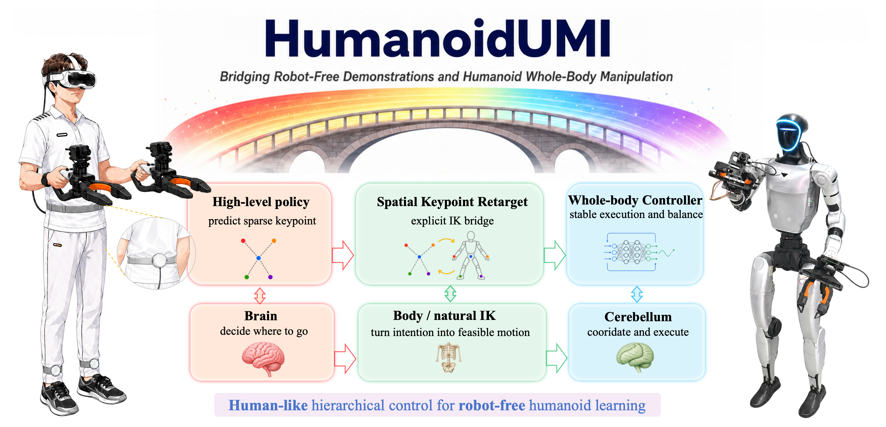
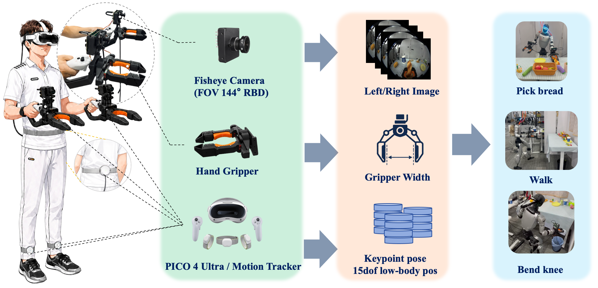
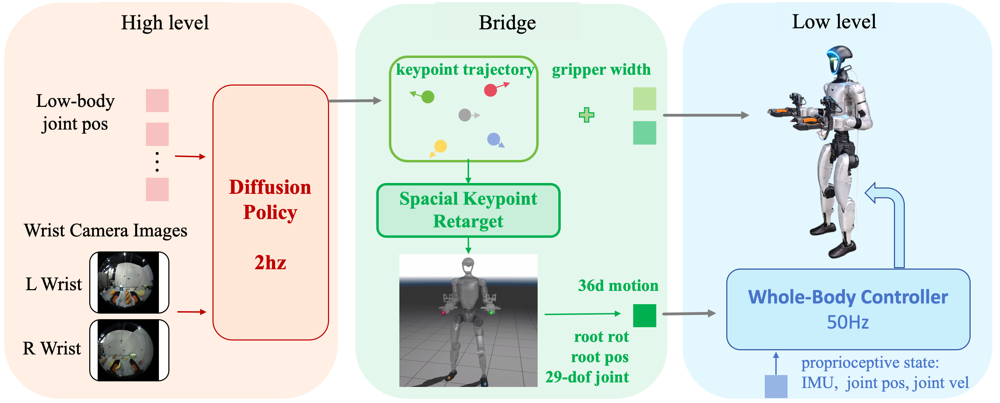
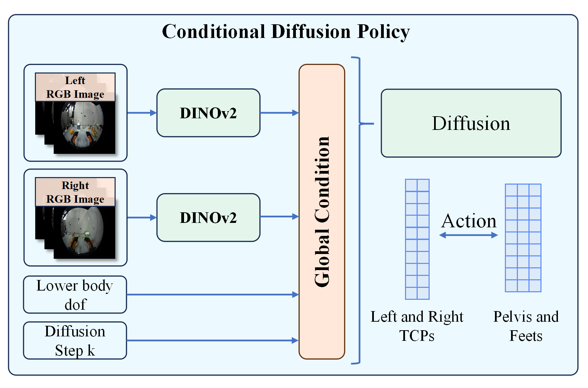
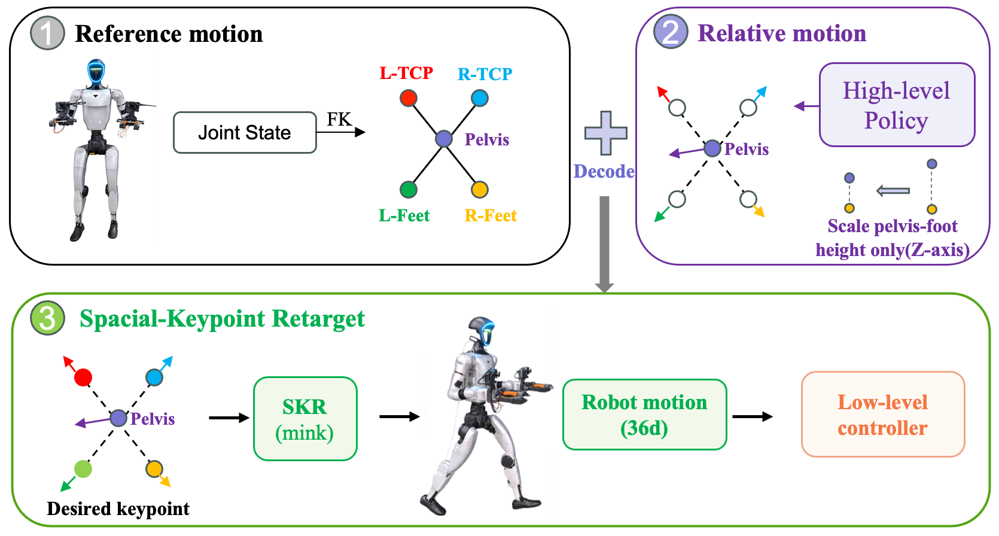
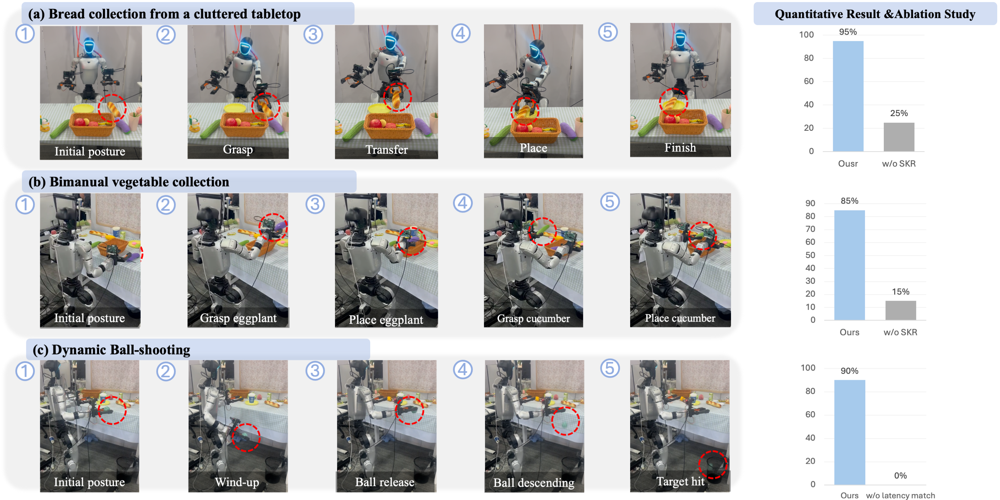
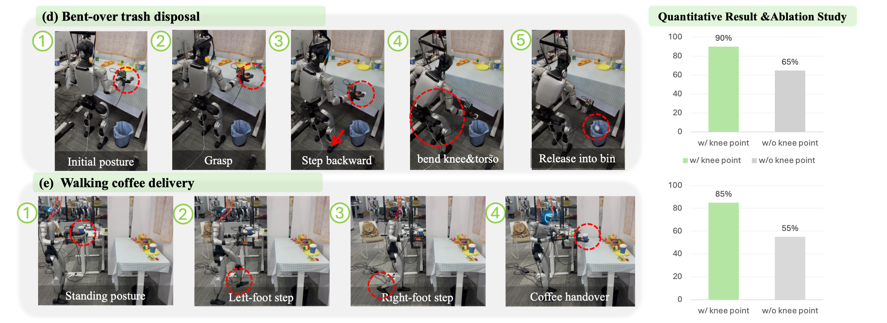

Cluttered tabletop pick-and-place
HumanoidUMI provides a robot-free data collection and learning framework for humanoid whole-body skills. Human demonstrations are collected with portable VR-UMI devices and represented as sparse task-relevant spatial keypoints. A high-level policy predicts future keypoint motions and gripper actions, Spatial Keypoint Retargeting converts them into feasible humanoid whole-body references, and a low-level whole-body controller executes the motion with balance and stability.

Overview of the full HumanoidUMI pipeline, from robot-free human demonstration capture to deployable humanoid whole-body execution.
High-quality data collection is a fundamental cornerstone for training humanoid whole-body visuomotor policies. Current data acquisition paradigms predominantly rely on robot teleoperation, which is often hindered by limited hardware accessibility and low operational efficiency. Inspired by the Universal Manipulation Interface (UMI), we propose HumanoidUMI, a portable, efficient, and robot-free data collection framework tailored for humanoid robots. HumanoidUMI leverages lightweight VR devices to capture human demonstrations as sparse keypoint trajectories while simultaneously recording wrist-mounted visual data. These multimodal data are subsequently utilized to train a high-level policy network that predicts future keypoint trajectories conditioned on the captured visual features. Through a robust keypoint retargeting pipeline, keypoint trajectories are precisely mapped onto the robot's morphology and executed via a whole-body controller. This approach enables the seamless transfer of diverse and agile behaviors from natural human demonstrations to humanoid embodiments. We demonstrate the efficacy and versatility of the proposed framework across five real-world scenarios.

The data acquisition platform combines a Pico 4-based motion capture setup — two foot-mounted trackers and one waist-mounted tracker — with two instrumented grippers, each carrying a fisheye camera.
The system synchronously records three multimodal streams:
These heterogeneous streams are jointly used to train the high-level policy and, at deployment, to drive the robot in real time — without ever requiring access to the physical humanoid during data collection.

HumanoidUMI formulates humanoid visuomotor control as a three-stage hierarchy:

We instantiate the high-level policy as a whole-body extension of Diffusion Policy that operates on a sparse task-space rather than the full joint configuration.
At inference, the denoised, normalized chunk is converted back to absolute SE(3) targets and forwarded to SKR for whole-body retargeting.

In robot-free settings, conventional retargeting methods (e.g., GMR) apply global or local rescaling to bridge the human–robot embodiment gap, which often distorts metric spatial information in the demonstration.
Spatial Keypoint Retargeting (SKR) takes a different route: it represents motion using five task-relevant keypoints — pelvis, left/right TCP, and left/right foot — and only scales the vertical pelvis-to-foot distance to compensate for height differences.
All other metric spatial relationships are preserved, allowing the retargeted motion to maintain the geometric structure of the original demonstration.
SKR also serves as the closed-loop interface between the high-level policy and the low-level controller:
We evaluate HumanoidUMI on real-world humanoid manipulation tasks using a Unitree G1 robot. The experiments test whether robot-free VR-UMI demonstrations can become deployable policies, whether sparse keypoints can coordinate hands, feet, and waist, and whether robot-free collection improves data throughput over teleoperation.

Robot-free demonstrations transfer to deployable manipulation skills. HumanoidUMI is evaluated on cluttered tabletop pick-and-place, bimanual vegetable collection, and dynamic ball-shooting. These tasks cover single-arm visual grasping, coordinated bimanual manipulation, and precisely timed dynamic release.
The full pipeline consistently outperforms ablated variants. Replacing Spatial Keypoint Retargeting with GMR reduces success on the manipulation tasks, while removing latency matching hurts dynamic shooting, showing that spatially grounded retargeting and synchronized sensing-control timing are both critical.

Sparse keypoints support whole-body coordination. Under-table waste disposal requires grasping, stepping backward, knee and torso bending, and reaching into a constrained workspace. Walking coffee delivery requires forward locomotion, stable stopping, and handover.
The knee-keypoint ablation shows that lower-body keypoints are important when waist-leg coordination is substantial. Without them, lower-body posture is underconstrained, reducing the reliability of body lowering, stepping, and stable reaching.
@misc{wang2026humanoidumibridgingrobotfreedemonstrations,
title={HumanoidUMI: Bridging Robot-Free Demonstrations and Humanoid Whole-Body Manipulation},
author={Hongwu Wang and Chenhao Yu and Youhao Hu and Jiachen Zhang and Yuanyuan Li and Shaqi Luo},
year={2026},
eprint={2606.27239},
archivePrefix={arXiv},
primaryClass={cs.RO},
url={https://arxiv.org/abs/2606.27239},
}
We are looking for passionate and self-motivated students to join us!
Our research focuses on Vision-Language-Action (VLA) and Whole-Body Control (WBC).
Internship and research collaboration opportunities are available.
📬 Send your resume to: wowhongwu@163.com, luoshaqi@163.com